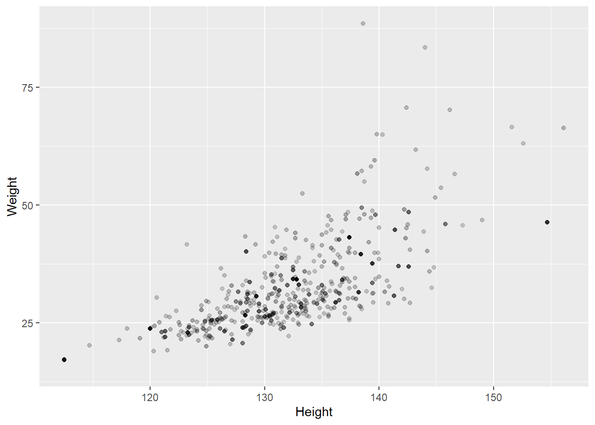

Chapter 16 Extra: Survey specific functions
As James showed you yesterday if we are using survey data that comes with weights, we need to account for those.
The ‘survey’ package has adapted functions for the different things that we did today. Let’s first create the weights for the data at hand, specify the sample design and store it in an R object that we can then call in our tests.
# add weighting variable
nhanes <- nhanes %>% dplyr::mutate(WTMEC4YR = 0.5 * WTMEC2YR)
# Create weighted R data object that holds the information about the sampling specifications
nhanes_design <- survey::svydesign(data = nhanes,
strata = ~SDMVSTRA,
id = ~SDMVPSU,
nest = TRUE,
weights = ~WTMEC4YR)Now we can seemlessly work with the weighted data. Let’s create a frequency table that accounts for sample weights.
table_gender_smoke_w <- survey::svytable(~Gender + SmokeNow, design = nhanes_design) # contains estimated frequencies based on survey weights
table_gender_smoke_w## SmokeNow
## Gender No Yes
## female 24074780 19887290
## male 29578392 24544477For reference, there is some sample code for the other main analyses using the survey package.
16.0.0.1 Survey-weighted histogram
# BMI
ggplot(data = nhanes,
mapping = aes(BMI, weight = WTMEC4YR)) +
geom_histogram(binwidth = 2,
color = "white") +
labs(x = "BMI")## Warning: Removed 2279 rows containing non-finite values (stat_bin).16.0.0.2 Survey-weighted bar plot
Bar plot of SleepHrsNight by gender
# Compute the survey-weighted mean by Gender
Sleep_mean_gender <- survey::svyby(formula = ~SleepHrsNight,
by = ~Gender,
design = nhanes_design,
FUN = svymean,
na.rm = TRUE,
keep.names = FALSE)
# Construct a bar plot of average SleepHrsNight by gender
ggplot(data = Sleep_mean_gender, mapping = aes(x = Gender, y = SleepHrsNight)) +
geom_col() +
labs("Average Hours of Sleep")
16.0.0.3 Survey-weighted Chi2 test
Next, let’s conduct a Chi2 test with survey weights
survey::svychisq(~Gender + SmokeNow,
design = nhanes_design,
statistic = "Chisq")##
## Pearson's X^2: Rao & Scott adjustment
##
## data: survey::svychisq(~Gender + SmokeNow, design = nhanes_design, statistic = "Chisq")
## X-squared = 0.025482, df = 1, p-value = 0.957316.0.0.4 Survey-weighted t-test
# do mean sleeping hours differ between men and women
svyttest(formula = SleepHrsNight~Gender,
design = nhanes_design)## Warning in summary.glm(g): observations with zero weight not used for calculating dispersion## Warning in summary.glm(glm.object): observations with zero weight not used for calculating dispersion##
## Design-based t-test
##
## data: SleepHrsNight ~ Gender
## t = -3.4077, df = 32, p-value = 0.001785
## alternative hypothesis: true difference in mean is not equal to 0
## 95 percent confidence interval:
## -0.15287218 -0.04123256
## sample estimates:
## difference in mean
## -0.09705237# Let's get the mean values printed out (created in step prior to t-test) to aid interpretation of the t-test
Sleep_mean_gender## Gender SleepHrsNight se
## 1 female 6.976103 0.02374684
## 2 male 6.879050 0.0195326316.0.0.5 Survey-weighted scatter plot
Let’s look at the relationship between height and weight in 8 year old children. You can set the transparency parameter alpha to be the sample weight (WTMEC4YR). Observations with a bigger weight will show as darker points.
ggplot(data = nhanes %>% filter(Age == 8),
mapping = aes(x = Height, y = Weight, alpha = WTMEC4YR)) +
geom_point() +
guides(alpha = FALSE)## Warning: Removed 20 rows containing missing values (geom_point).
16.0.0.6 Survey-weighted regression
Let’s model Weight based on Height for 8 year olds
model <- svyglm(Weight ~ Height, data = nhanes %>% filter(Age == 8),
design = nhanes_design)
summary(model)##
## Call:
## svyglm(formula = Weight ~ Height, design = nhanes_design, data = nhanes %>%
## filter(Age == 8))
##
## Survey design:
## survey::svydesign(data = nhanes, strata = ~SDMVSTRA, id = ~SDMVPSU,
## nest = TRUE, weights = ~WTMEC4YR)
##
## Coefficients:
## Estimate Std. Error t value Pr(>|t|)
## (Intercept) -92.1619 1.5032 -61.31 <2e-16 ***
## Height 1.0181 0.0101 100.83 <2e-16 ***
## ---
## Signif. codes: 0 '***' 0.001 '**' 0.01 '*' 0.05 '.' 0.1 ' ' 1
##
## (Dispersion parameter for gaussian family taken to be 362.9893)
##
## Number of Fisher Scoring iterations: 2